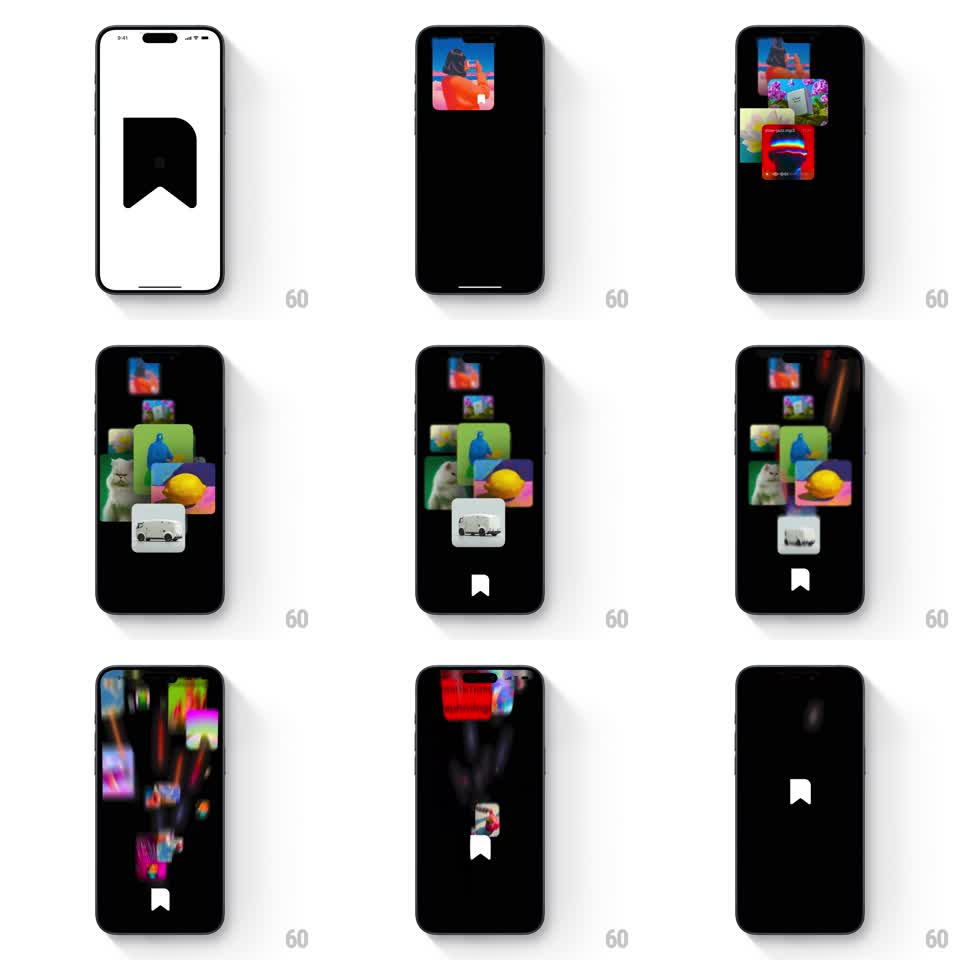

Media
Frame-by-frame

Rebuild this animation 1:1: Recollect's launch splash - a cascade of photo cards stacks up from the bottom of a black screen, converges toward center, then bursts apart with motion streaks, resolving into the centered white bookmark logo.

Rebuild this animation 1:1: Recollect's launch splash - a cascade of photo cards stacks up from the bottom of a black screen, converges toward center, then bursts apart with motion streaks, resolving into the centered white bookmark logo. ## Integration Integration: stack-agnostic spec - springs given as stiffness/damping, timed motions as duration + curve; map every value to your framework and animation library of choice. ## Scene Full-screen splash. Starts on a white flash frame with the black bookmark glyph, cuts to black. 8-10 rounded-corner photo cards (varied sizes, 48-96px) enter from off-screen bottom and assemble a loose collage in the upper two-thirds. ## Motion spec Pattern: one-shot splash - cascading card convergence into a logo resolve. - Cards enter one by one from below (translate 120% -> 0, 300ms each, 90ms stagger, ease-out) landing in a stacked collage with small random rotations (-8deg to 8deg). - Once stacked, the whole collage compresses toward screen center (scale 1 -> 0.85, 250ms, ease-in). - Burst: cards fling outward and upward with strong directional motion blur (translate 200-400px, 350ms, ease-in), leaving light streak trails. - As the last card exits, the white bookmark logo fades in at center (opacity 0 -> 1, scale 0.9 -> 1, 300ms) and holds. ## Calibration - The cascade should feel like cards dealt onto a table - each lands with a small settle. - The burst is fast and blurred; individual cards should not be readable during exit. ## Reduced motion Cards fade in stacked (200ms), then crossfade to the bookmark logo (250ms); no burst. ## Don't miss - Background stays pure black after the opening white flash. - The logo only appears after every card has exited.